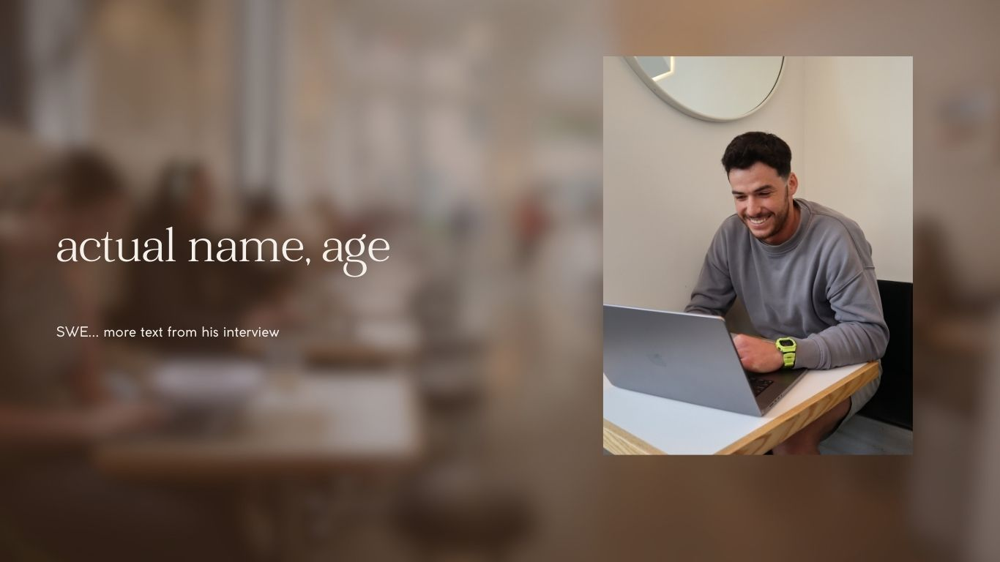

<!DOCTYPE html>
<html lang="en">
<head>
    <meta charset="UTF-8">
    <meta name="viewport" content="width=device-width, initial-scale=1.0">
    <title>Work, Reimagined</title>
    <link rel = "stylesheet" href = "style.css">
</head>

<body>

<!-- image slideshow -->
<div class="banner">
    <h1 class="headline"><span id="demo"></span></h1>
    <div class="slideshow-container">
        <div class="mySlides">
            
        </div>
        <div class="mySlides">
            
        </div>
        <div class="mySlides">
            
        </div>
        <div class="mySlides">
            
        </div> 
        <div class="mySlides">
            
        </div>
        <div class="mySlides">
            
        </div>
    </div>
</div>

<script>
    var i = 0;
    var txt = 'Work, Reimagined';
    var speed = 50;

function typeWriter() {
  if (i < txt.length) {
    document.getElementById("demo").innerHTML += txt.charAt(i);
    i++;
    setTimeout(typeWriter, speed);
    }
}

window.onload = function() {
    typeWriter();
};

</script>

</body>
</html>

<!-- written content -->
<div class="content">
    <h3>by Nadia Bidarian, Marlene Alanis, Yasmin Mustefa, and Jordan Lam</h3>

    <div class="image-container">
        
        
        
    </div>

    <div class="text">
        <p>Remote workers in San Francisco, who make up 32.5% of the city’s total workforce, may have found themselves in one of three places recently: Their bed. Their desk. Perhaps their couch. Then back to bed.</p>
        <p>Enter San Francisco’s social and coworking clubs, each boasting various membership models that promise friendship, community, and most of all, a change of scenery. These “third spaces” offer a place for people to congregate and work.</p>
        <p>“Members come in and are like ‘I need to get out of my house, or I’m going to burn it down,’” said Thomas Kennedy, Director of Membership at The Battery, a social club in San Francisco.</p>
        <p>A former marble warehouse and candy factory before conversion into a social club in 2013, The Battery’s current facilities offer its members a restaurant, outdoor patio, gym, wine cellar and various event spaces where staff host over 400 events per year, according to Kennedy. Members of The Battery may also elect to join “societies” within the membership, such as the Black+ Society or the society for Singles of the Battery. Members pay $2,800 per year for access.</p>
        <p>Kennedy describes the vibe as more “entrepreneurial” than coworking, although The Battery is in the process of converting its gym to an official coworking space due to member demand. The Battery enforces a strict electronics curfew, where all members must put away their electronics after 6 p.m., as well as rules against taking phone calls except inside a phone booth and a strict no photo or video policy. Kennedy said The Battery has these provisions in place to maintain its purpose as a social club first and foremost.</p>
        <aside class="pquote">
            <blockquote>
                <p>“I feel like I get a little stir crazy when I'm stuck in an apartment all day"</p>
            </blockquote>
        </aside>
        <p>“It's not a space for you to go and sit at eight hours and just hammer away at work. It's a place where you can do work in between transitioning from one meeting to another or while you're waiting for your friends to show up,” Kennedy said.</p>
        <p>Other spaces in San Francisco explicitly encourage using the venue as a coworking space during the day. The idea for one such space struck former WeWork employee Teddy Kramer as he walked by Starbucks one day and noticed that people weren’t only drinking coffee inside. Instead, they were working.</p>
        <p>“I feel like I get a little stir crazy when I'm stuck in an apartment all day,” said Alaura McGuire, a UC Law SF student. McGuire says the atmosphere around other people in coffee shops allows her to refocus on work.</p>
        <p>McGuire is just one of many who frequent coffee shops as a way to escape the social isolation felt at home.</p>
        <p>“[Remote work] was the one of the biggest shocks I'd have in my life,” said Kramer, who worked fully remotely in 2019. “It was hard. I'll be really honest about that. It was not easy being alone every single day of the week for work.”</p>
        <p>Kramer went on to found Neon, a coworking space in Cow Hollow that allows anyone to drop in to use its wifi, printing services, desk space, phone booths and drip coffee for $5 per hour or $20 per day. No long-term membership is required for access.</p>
        <p>“I think Neon kind of reminds me of what I remember from old times when people used to connect. Now, it seems like everything is more disconnected with the work-from-home kind of environment,” said Sasha Zabelin, a local small business owner who spoke at one of Neon’s nighttime events on Feb. 8. Zabelin, a former entrepreneur and software engineer who hails from Ukraine, established Outbaking, a bakery in Berkeley CA that hires Ukrainian refugees.</p>
        <p>Other community hubs offering coworking spaces and nighttime events are geared towards specific demographics. The Ruby, located inside a former winery from the 1880s in the Mission District, caters specifically towards nonbinary, transfeminine, and female-identifying creatives.</p>
        <p>“We all know that we live in a world, in the arts and also just in general, where femme, nonbinary and BIPOC voices are not necessarily elevated or respected or acknowledged in the same way,” Director of the Ruby Peggy Lee said. “Giving these opportunities for us to come together is empowering.”</p>
        <p>The Ruby, The Battery and Neon all cast their own nets for San Francisco professionals, appealing to a different array of people who ultimately seek flexibility and camaraderie within their workday — and after hours.</p>
        <p>Not everyone is convinced though. Berkeley Haas Professor Juliana Schroeder, who studies social interaction and interpersonal processes, has called this issue the “loneliness epidemic.” She says the ability of the coworking spaces to provide opportunities for people to engage with one another is a good idea but is worried about solving the root of the problem.</p>
        <aside class="pquotethree">
            <blockquote>
                “They think it's going to be bad. That's the prediction”</p>
            </blockquote>
        </aside>
        <p>“I worry that people's missed predictions about whether some of these things will be worth their time might end up leading them not to go, you know, as much as they could.”</p>
        <p>Schroeder conducted a study in 2011 about people’s willingness to interact with strangers in public settings and found that people enjoyed interacting with others on the train. In a Chicago Tribune op-ed, Schroeder encouraged a train car dedicated to social interactions. However, she said there was a lot of pushback.</p>
        <p>“They think it's going to be bad. That's the prediction,” she said. “And we're like well, ‘have you tried it?’ 
            Like the research shows, you'll actually enjoy it.”</p>
        <p>“Unless you're kind of addressing psychology more directly, by correcting people's broken mental models, people may not take advantage of it and in fact that business might not succeed,” she said.</p>
    </div>
</div>

<script src="main.js"></script>
</body>
</html>
